금형기능사 (2015-01-25 기출문제)
1과목: 임의구분
1. 백주철을 고온으로 장시간 풀림해서 시멘타이트를 분해또는 감소시키고 인성이나 연성을 증가시킨 주철로, 대량생산품에 사용되는 측심,백심,펄라이트계로 구분되는 것은?
- 칠드주철
- 회주철
- 가단주철
- 구상흑연주철
(정답률: 66%)

2. 강의 담금질 조직에 따라 분류한 것 중 틀린것은?
- 시멘타이트
- 오스테나이트
- 마텐자이트
- 트루스타이트
(정답률: 55%)
3. 구리에 대한 설명 중 옳지 않은 것은?
- 전연성이 좋아 가공이 쉽다.
- 화학적 저항력이 작아 부식이 잘된다.
- 전기 및 열의 전도성이 우수하다.
- 광택이 아름답고 귀금속적 성질이 우수하다.
(정답률: 90%)
4. 철강의 5대 원소에 포함되지 않는 것은?
- 탄소
- 규소
- 아연
- 망간
(정답률: 84%)
5. 열경화성 수지에 해당되지 않는 것은?
- 페놀수지
- 요소수지
- 멜라민수지
- 아크릴수지
(정답률: 65%)
6. 순철에 대한 설명으로 옳은 것은?
- 각 변태점에서 연속적으로 변화한다.
- 저온에서 산화작용이 심하다.
- 온도에 따라 자성의 세기가 변화한다.
- 알칼리에는 부식성이 크나 강산에는 부식성이 작다.
(정답률: 63%)
7. 금속 중 Cu-Sn 합금으로 부식에 강한 밸브, 동상,베어링합금 등에 널리 쓰이는 재료는?
- 황동
- 청동
- 합금강
- 세라믹
(정답률: 82%)
8. 논리턴 밸브라고도 하며 일정 방향으로는 공기가 흐를 수 있으나 그 반대방향으로는 흐를 수 없게 하는 역할을 가진 밸브는?
- 교축밸브
- 체크밸브
- 셔틀밸브
- 2압밸브
(정답률: 82%)
9. 압력스위치의 종류가 아닌 것은?
- 다이어프램형
- 벨로우즈형
- 브로동관형
- 릴리프형
(정답률: 71%)
10. 공기의 상태변화에 관련된 샬의 법칙 관례식으로 옳은 것은? (단,T : 절대온도, V : 체석이다.)
- T1T2=V1V2
- T1V1=T2V2
- T1V2=T2V1
- V2=V1T1T2
(정답률: 73%)
11. 다음 그림의 공갑기기에 대한 설명으로 틀린 것은?
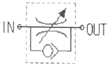
- 통상적으로 스피드 컨트롤러 라고도 한다.
- 공기의 흐름을 변환하여 방향을 제어하는데 사용된다.
- 실린더로 들어가는 공기의 유량을 조절하여 실린더의 속도를 조절한다.
- 일방향 유량제어밸브와 체크밸브를 사용하며 미터인-아웃회로 등을 구성하는데 필요하다.
(정답률: 60%)
12. 분류밸브를 표시하는 기호는?
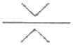
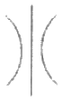
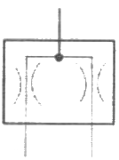
(정답률: 72%)
13. 일반적인 공압 액추에이터나 공압기기의 작동압력으로 가장 알맞은 압력(kgf/cm2)은?
- 1~2
- 4~6
- 10~15
- 20~30
(정답률: 69%)
14. 성형품의 치수가 160mm이며,ABS수지의 수축률이 5/1000일 때 금형 치수는 약 몇 mm인가?
- 160.8
- 152.6
- 149.3
- 130.5
(정답률: 69%)
15. 압축성형 금형의 종류가 아닌 것은?
- 평압형
- 압입형
- 반압인형
- 포트형
(정답률: 82%)
16. 사출성형 시 성형품에 나타나는 충전부족의 원인으로 가장 적합한 것은?
- 재료의 공급이 부족하다.
- 재료의 흐름이 우수하다.
- 사출온도가 높다.
- 게이트의 밸런스가 적절하다.
(정답률: 81%)
17. 노즐에 사출되는 수지의 속도를 나타내며 단위시간에 사출되는 최대용적으로 표시되는 것은?
- 사출용량
- 가소화능력
- 사출압력
- 사출율
(정답률: 70%)
18. 성형품의 표면 또는 표면 가까이에 수지의 흐름방향으로 발생하는 매우 가는 선의 다발모양은 무엇인가?
- 흑줄
- 싱크마크
- 은줄
- 백화
(정답률: 71%)
19. 사출성형기 운전시 재료 탱크,드라이어,성형기 등에 자동적으로 재료를 공급시켜주는 장치는?
- 호퍼 드라이어
- 호퍼로더
- 텀블러
- 혼합기
(정답률: 73%)
20. 성형기의 노즐로부터 사출된 수지의 유동순서로 옳은 것은?
- 노즐→게이트→러너→스프루
- 노즐→스프루→러너→게이트
- 노즐→러너→게이트→스프루
- 노즐→게이트→스프루→러너
(정답률: 62%)
2과목: 임의구분
21. 사출성형 금형에서 파팅 라인을 설명한 것으로 가장 적합한 것은?
- 수지가 흘러들어 가는 곳
- 가동 측 형판과 고정 측 형판이 분리되는 곳
- 재료가 성형기로 흘러 들어가는 과정
- 성형이 되는 한 공정
(정답률: 71%)
22. 압출성형에 의한 가공 제품이 아닌 것은?
- 컵
- 튜브
- 파이프
- 선재피복
(정답률: 72%)
23. 성형품 모서리 부의 응력집중을 피하기 위한 방법 중 옳은 것은?
- 보스를 붙인다.
- 리브를 붙인다.
- 모서리부에 라운드를 준다.
- 양 측벽의 두께를 증가시킨다.
(정답률: 79%)
24. 12mm의 피어싱펀치로 두꼐 1.5mm의 소재를 가공한다면 파일럿 핀의 직경은 약 몇mm인가?
- 9.94
- 10.50
- 11.94
- 12.50
(정답률: 42%)
25. 일반적으로 프레스를 선정할 때 유의사항으로 틀린 것은?
- 가공방법 및 작업방법을 명확하게 한다.
- 제품 가공에 적합한 프레스를 선택한다.
- 가공 제품의 치수 정도에 따라 선택한다.
- 가격이 비싸고 큰 힘을 낼 수 있어야 한다.
(정답률: 90%)
26. 전단가공된 제품을 정밀하고 전단면을 깨끗하게 가공하기 위하여 미소량으로 가공하는 방법은?
- 블랭킹 가공
- 트리밍 가공
- 슬리팅 가공
- 세이빙 가공
(정답률: 64%)
27. 펀치의 고정방법이 아닌 것은?
- 볼트고정방식
- 클램프고정방식
- 키고정방식
- 용접고정방식
(정답률: 74%)
28. 재료가 시간이 경과함으로 따라서 경화되는 성질을 무엇이라 하는가?
- 번형
- 소성가공
- 가공경화
- 시효경화
(정답률: 78%)
29. 기계가공법 중에서 소성가공이 아닌 것은?
- 단조
- 인발
- 브로칭
- 압출
(정답률: 72%)
30. 재료를 길이 방향으로 압축시켜 길이를 감소시킴으로써 길이방향과 직각으로 재료를 유동시켜 큰단면을 만드는 가공법은?
- 사이징 가공
- 업세팅 가공
- 블랭킹 가공
- 압인 가공
(정답률: 56%)
31. 다음 중 다이의 종류가 아닌 것은?
- 일체 다이
- 부시 다이
- 분할 다이
- 이동 다이
(정답률: 56%)
32. 전방압출에서 블랭크의 직경과 압출 후의 직경비로 표시하며 가공한계를 나타내는 것은?
- 압출비
- 사출비
- 드로잉비
- 단면감소비
(정답률: 67%)
33. 프로그레시브 금형의 장점인 것은?
- 프레스 가공의 고속화가 가능하다.
- 성형재료 및 프레스 기계의 제약이 있다.
- 설계변경에 대한 대응범위가 제한된다.
- 프레스 공정의 작업관리 기술의 고도화가 필요하다.
(정답률: 79%)
34. 기계에서 발생하는 소음이나 진동 등과 같은 주위 환경 또는 자연 현상의 급변으로 생기는 오차는?
- 시차
- 계기오차
- 측정오차
- 우연오차
(정답률: 69%)
35. 와이어 컷 방전가공기의 특성으로 틀린 것은?
- 복잡한 형상의 모양도 가공이 가능하다.
- 담금질한 강이나 초경합금의 재료도 가공이 가능하다.
- 가공조건을 변경하기 쉽다.
- 항상 새전극으로 가공되므로 거칠기가 불량하다.
(정답률: 80%)
36. 금형에 표면처리하는 목적과 거리가 먼 것은?
- 굽힘방지
- 균열방지
- 강도 증가
- 내열성 감소
(정답률: 84%)
37. 프레스 금형에 속하지 않는 것은?
- 블랭킹 금형
- 드로잉 금형
- 굽힘금형
- 사출금형
(정답률: 72%)
38. 절삭공구가 가져야 할 기계적 성질로서 바르게 짝지어진 것은?
- 내열성,내마모성,취성
- 고경도,내충격성,자성
- 내충격성,취성,절연성
- 내마모성,내열성,내충격성
(정답률: 86%)
39. 성형품의 일부분이 성형 되지 않은 현상을 미성형이라 한다. 이 때 불량의 원인 중 가장 거리가 먼 것은?
- 성형품의 살 두께가 얇을 경우
- 캐비티내의 공기가 빠지지 않을 경우
- 금형온도,수지온도가 높을 경우
- 사출압력이 낮을 경우
(정답률: 63%)
40. 방전 전극재료 중 가격은 높으나 고정밀도 가공이나 초경합금 가공에 사용되는 것은?
- Cu
- Ag-W
- Cu-Zn
- Fe-C
(정답률: 69%)
3과목: 임의구분
41. 지그 그라인딩 작업에서 일반적으로 하지 않는 작업은?
- 원통 내면 역삭
- 테이퍼 연삭
- 평면 연삭
- 슬로팅 연삭
(정답률: 50%)
42. 수량이 많은 공작물의 치수 허용범위를 검사하기에 가장 적합한 측정기는?
- 마이크로미터
- 다이얼 게이지
- 한계게이지
- 버니어 캘리퍼스
(정답률: 69%)
43. 공작물을 지그 중앙에 클램핑시키고 지그를 회전시켜가면서 공작물의 위치를 다시 결정하지 않고 여러 면을 가공 완성할 수 있는 지그는?
- 박스지그
- 채널지그
- 히프지그
- 분할지그
(정답률: 51%)
44. 조각기에 의한 형 조각의 모델 제작법 중평면의 문자, 무늬 등에 가장 효과적인 제작법은?
- 전주법
- 배럴가공
- 전해연마
- 부식법
(정답률: 46%)
45. 머시닝센터에서 G94코드를 이용하여 암나사를 가공하려고한다. 탭의 피치가 1.25mm일 때,주축의 회전수를 300rpm으로 한다면 지령해야 할 이송속도(F)는?
- 300mm/min
- 325mm/min
- 350mm/min
- 375mm/min
(정답률: 60%)
46. 프레스 작업시 안전수칙에 대한 설명 중 틀린 것은?
- 발판 밑에는 재료나 제품을 두지 않아야 한다.
- 금형사이에 신체의 일부분이 들어가지 않도록 제작한다.
- 두꺼운 판 절단시는 손으로 힘주어 잡는다.
- 작업전에는 공회전을 하면서 클러치를 조작해 본다.
(정답률: 86%)
47. 용해된 금속을 만들고자 하는 형상의 주형 속에 주입 응고시켜 제품을 만드는 방법은?
- 프레스
- 단조
- 주조
- 인발
(정답률: 82%)
48. 금형을 조립할 때 M10×1.5볼트 4개를 조립하려고 한다. 탭 가공을 하기 위한 드릴의 직경은?
- 8mm
- 8.5mm
- 9mm
- 10mm
(정답률: 82%)
49. CNC공작기계에서 백 래시의 오차를 줄이기 위해 사용되는 이송시스템은?
- 세트 스크류
- 볼 스크류
- 사각 스크류
- 리드 스크류
(정답률: 73%)
50. 비중이 2.7이며 전기전도성이 양호하고 가단성이 있어 봉재 및 판재로 사용되는 것은?
- 마그네슘합금
- 동합금
- 알루미늄합금
- 활자용합금
(정답률: 70%)
51. 수나사의 측면을 도시하고자 할 때,다음 중 가장 적합하게 나타낸 것은?
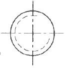
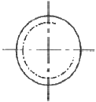
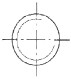
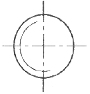
(정답률: 67%)
52. 다음 기하공차의 종류 중 선의 윤곽도를 나타내는 기호는?
(정답률: 85%)
53. ø50H7/g6은 어 종류의 끼워 맞춤인가?
- 축 기준식 억지 끼워맞춤
- 구멍 기준식 중간 끼워 맞춤
- 축 기준식 헐거운 끼워맞춤
- 구멍 기준식 헐거운 끼워맞춤
(정답률: 62%)
54. 면의 지시기호에서 가공방법을 지시할 때의 기호로 맞는 것은?
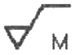
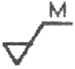
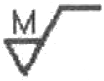
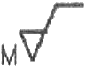
(정답률: 72%)
55. 구름 베어링의 호칭 번호가 64⑤일 때, 베어링 안지름은 몇 mm인가?
- 20
- 25
- 30
- 4⑤
(정답률: 82%)
56. 도형의 중심을 표시하거나 중심이 이동한 중심 궤적을 표사하는데 쓰이는 선의 명칭은?
- 지시선
- 기준선
- 중심선
- 가상선
(정답률: 87%)
57. 투상법에서 그림과 같이 경사진 부분의 실제 모양을 도시하기 위하여 사용하는 투상도의 명칭은?
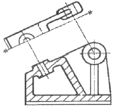
- 부분투상도
- 국부투상도
- 회전투상도
- 보조투상도
(정답률: 60%)
58. 그림과 같은 입체도에서 화살표 방향을 정면으로 할 경우 평면도로 옳은 것은?
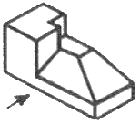
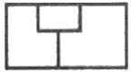
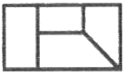
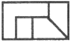
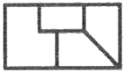
(정답률: 84%)
59. 그림과 같이 축의 치수가 주어졌을 때 편심량 A는 얼마인가?
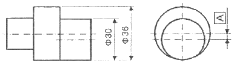
- 1mm
- 3mm
- 6mm
- 9mm
(정답률: 76%)
60. 길이 치수의 허용 한계를 지시한 것 중 잘못 나타낸 것은?(오류 신고가 접수된 문제입니다. 반드시 정답과 해설을 확인하시기 바랍니다.)
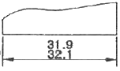
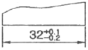
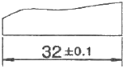
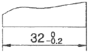
(정답률: 83%)